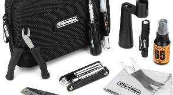

보관 환경
목재 기타 관리의 핵심은 온도 20~25도, 습도 45~55%를 유지하는 것입니다. 온도와 습도가 크게 흔들리면 넥, 지판, 바디가 변형될 수 있습니다.
- 여름철 : 습도가 높아지면 목재가 부풀어 올라 줄 높이가 뜨고 소리가 먹먹해질 수 있습니다. 하드케이스 안에 제습제를 넣어 보관하는 것이 좋습니다.
- 겨울철 : 건조하면 목재가 수축하면서 지판이 갈라지거나 바디 상판에 변형이 생길 수 있습니다. 기타용 가습기를 사용하는 것이 도움이 됩니다.
